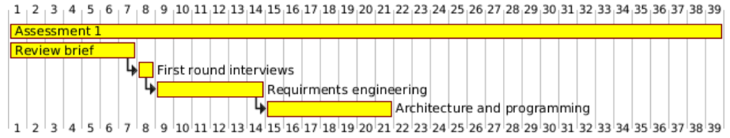
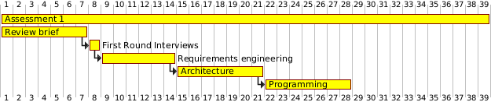
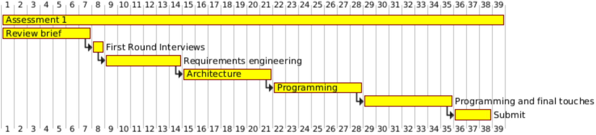

Week 0: We booked the interview slot as well as wrote up interview questions. Furthermore we researched Java frameworks as well as researching software methodologies. We also started writing up the planning document. Our priority for this week was to get the interview completed as the eliciting requirements portion and thus the rest of the project relies on these being completed. To complete this priority we had to think about what questions we needed to ask our stakeholders to gain valuable insight to the customer of this product.
Week 1: We wrote about the requirements as well as started thinking about the art style and story line of the game. This was only possible due to the fact that we have had our interview and gathered the stakeholders requirements through it. This week was dependent on the interview being completed to a high enough standard that we can create requirements that were of the highest quality. Our main priority for this week was to elicit requirements and write them down. This is essential for the programmers to start coding as the code has to coincide with the requirements to a certain extent.
Week 2: At the start of this sprint we originally wanted to start the process of programming. Unfortunately for this week we could not move onto programming and thus the programming of the game will be the key issue to address during week 3. However, the UML diagrams were made and a succinct architecture was also created. One of our priorities was to become familiar with the game engine as well as the architecture we were going to use (ECS) as we were going to build upon this in the future weeks to actually build the project. Week 3: For this sprint our main goal was to code the first part of the game including character movement and getting the made tilemap loaded onto the screen. This sprint is essential to start coding the more difficult algorithms and components of the game.
Week 4: This week has two main priorities as it is the week before the deadline date, one of them being that the coding is completed to the best of our ability with essential features working without bugs. The other feature is to read through all the documents to make sure that all the deliverables meet the marks and a standard we are happy with. We also started thinking about creating a presentation which will be shown to the rest of our cohort to try and convince them to take over our project.